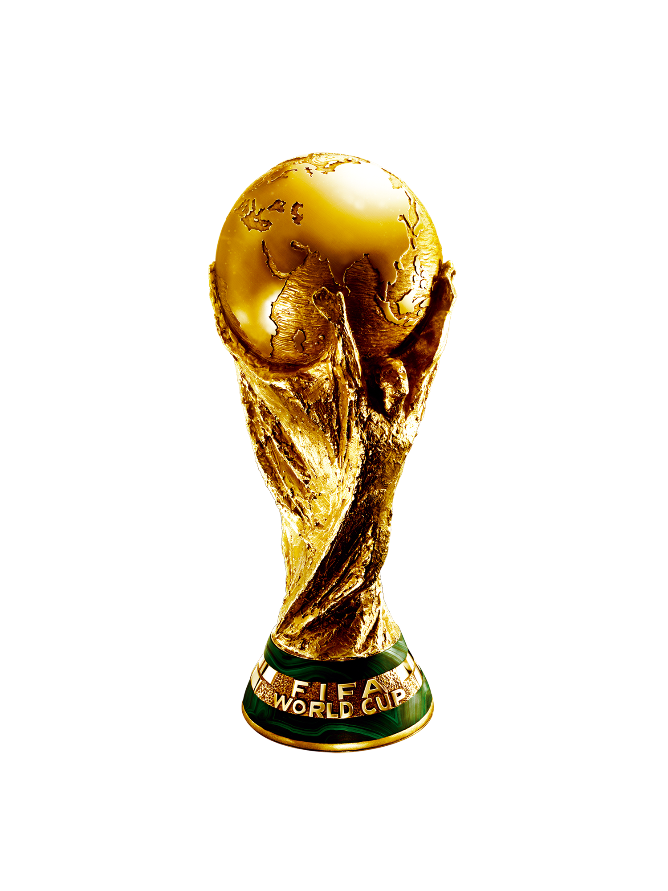

Un equipo que venía de ganar en el mítico Maracaná la final de la Copa América ante
Brasil,
que venció a Italia en la Finalissima y en los amistosos previos al arranque del Mundial deleitó e
ilusionó
con su juego, de repente llegó a Qatar con mucha expectativa y una enorme cantidad de partidos sin
conocer
la derrota. Y tocó perder en el debut...
Tras 36 duelos y en la presentación mundialista, la Scaloneta cayó 2-1 ante Arabia Saudita, en un juego
que
comenzó en ventaja gracias a un gol de penal de Messi y pudo haber terminado 3-0 en el primer tiempo. En
los
segundos 45 minutos, los árabes dieron vuelta el partido en una ráfaga y Argentina perdió el invicto.
CAPITULO II
Ay, ay, ay, ay, canta y no llores
Argentina 2 - Mexico 0
Ya con el empate entre México y Polonia, el alivio fue enorme, las posibilidades quedaron abiertas a
todos
los integrantes del Grupo C y un sábado 26 de noviembre, la Selección enfrentó al Tri del Tata Martino
luego
de unos días con interrogantes.
Al finalizar un primer tiempo que no dio demasiado, Messi apareció para calmar las aguas con un zurdazo
desde afuera del área y Enzo Fernández se despachó con un golazo para asentarse entre los titulares
desde
ahí en adelante.
CAPITULO III
Yo vengo a ofrecer mi corazón
Polonia 0 - Argentina 2
Los jugadores argentinos, que se fueron cantando del Lusail tras la primera victoria obtenida en la Copa
del
Mundo, llegaron de otra manera a la tercera fecha. A kilómetros se notaba la confianza y la fe que el
pueblo
les hizo llegar tras el partido que los de Scaloni jugaron ante México.
Argentina jugó un buen partido, venció 2-0 a Polonia con goles de Alexis Mac Allister y Julián Álvarez,
y
nuevamente otra variante en la mitad de la cancha apareció para quedarse: el ex Boca, que marcó el 1-0
apenas iniciado el segundo tiempo, jugó un partidazo y definió su lugar en el once inicial. La Selección
se
clasificó primera de grupo y de Lewandowski no hubo novedades...
CAPITULO IV
Bienvenidos al tren
Argentina 2 - Australia 1
Recién comenzado diciembre y con la Scaloneta metida entre las mejores 16 selecciones del mundo, tocó
Australia. Segunda en el Grupo D por detrás de Francia y lejos de todas las especulaciones que ponían a
una
flojita Dinamarca como rival de Argentina en octavos.
El genio frotó la lámpara otra vez y abrió el partido a los 35 minutos de la primera parte. Julián, ya
titular indiscutido, demostró muchas ganas, presionó arriba, forjó el error del arquero australiano
junto a
De Paul y anotó el 2-0. Luego un tiro de Goodwin desde fuera del área tocó en Enzo Fernández, cambió
totalmente de trayectoria y se coló en el arco de Emiliano Martínez, que al final salvó a Argentina en
la
última jugada del partido. Argentina ganó 2-1 y pasó a cuartos.
CAPITULO V
Van Gaal, el Topo Gigio y Anda pa' ya bobo!
Argentina 2(4) - Paises Bajos 2(3)
Después de que Van Gaal calentó la previa en los micrófonos, el partido fue parejo hasta que Messi
apareció
a lo Messi, sacó una asistencia descomunal que dejó a Nahuel Molina solo frente al arco para abrir un
partido complicado.
Tras una falta dentro del área a Acuña (de Dumfries), el controversial árbitro Mateu Lahoz sancionó
penal
para Argentina y otra vez Leo lo cambió por gol. Se respiraba tranquilidad y se olía la semifinal, pero
el
ingreso de Wout Weghorst provocó que a los 38 minutos los neerlandeses anoten el descuento y luego el
empate
en la última jugada del partido. Al alargue...
En el tiempo extra, la Albiceleste venía de recibir un golpazo y se notó. El alargue arrancó con más
dudas
que fútbol, pero en los segundos 15 minutos, los de Scaloni merecieron una victoria que no llegó y la
historia se definió por penales.
En la definición, el Dibu Martínez le contuvo los dos primeros a Van Dijk y Berghuis, y los jugadores
argentinos patearon con menos presión. Messi, Paredes y Montiel acertaron... Enzo Fernández tuvo la
definición en sus pies y erró, pero le quedó el quinto a Lautaro Martínez, que convirtió y metió a
Argentina
en semifinales. Y Países Bajos, payá bobo.
CAPITULO VI
Pobre del que quiera robarnos la ilusion
Argentina 3 - Croacia 0
En un duelo de semifinales de Copa del Mundo, la Selección Argentina enfrentó a Croacia, la última
finalista
en Rusia y un gran equipo que, además de eliminar a Brasil, se quedó con el tercer puesto al vencer a
Marruecos el sábado.
El partido comenzó parejo, los balcánicos tenían la pelota y los argentinos esperaban agazapados en el
fondo
hasta que llegó un magnífico pase de Enzo Fernández que dejó solo a Julián frente a Livaković, que le
cometió un penal. Messi anotó, alcanzó su quinto gol en el torneo y se convirtió en el argentino con más
goles en la cita máxima del fútbol.
Álvarez se llevó todo puesto y, en un gran contraataque, anotó un golazo para el 2-0. El tercero,
también de
Julián, llegó tras la mejor jugada de Leo en el Mundial: bailó a un joven Gvardiol y el partido por
momentos
pareció hasta amistoso. ¡A la final!
CAPITULO VII
A brillar mi amor ...
Argentina 3(4) - Francia 3(2)
El último paso de la Scaloneta en Qatar fue ante Francia, campeón en Rusia 2018 y con el que había aire
de
revancha luego de lo ocurrido en los octavos de final de aquel Mundial. Con Ángel Di María de entrada,
la
Selección dio una clase de fútbol en el primer tiempo y además concretó con goles de Lionel Messi, de
penal,
y el Fideo, después de una contra colectiva colosal.
Parecía que el camino terminaba fácil para la Selección, pero a veces parece que si no sufrimos no vale.
Pero así también se disfruta más. Francia y Mbappé pusieron el partido 2-2 en una ráfaga, el partido se
fue
al alargue, volvió a aparecer Messi para el 3-2 y un brazo de Montiel en un despeje le dio otro penal al
10
azul para empatar 3-3. Penales y desfribriladores.
Pero la historia le tenía reservada su última gran conquista a Messi, y con Dibu Martínez otra vez héroe
en
los penales (contuvo dos), Argentina se terminó coronando campeón del mundo por tercera vez en su
gloriosa
historia futbolera. Con el Diego desde el cielo y el más grande de todos los tiempos en la cancha.

25/06/1978
Argentina 3 - Paises Bajos 1
Mundial de Argentina, 1978
29/06/1986
Argentina 3 - Alemania Federal 2
Mundial de Mexico, 1986
18/12/2022
Argentina 3(4) - Francia 3(2)
Mundial de Qatar, 2022